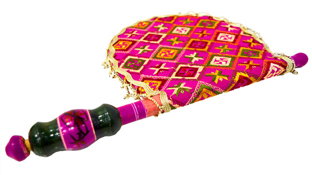

ART AND CULTURE
ART AND CULTURE
________
Punjab Arts & Crafts is highly acclaimed the world over. Punjab is a culturally rich north western state of India. The Arts and Crafts of Punjab include the variety of handiworks. The artisans of Punjab are skilled and dexterous. The women of the villages are mainly involved in carrying out the Punjab Arts & Crafts.
The Mud Works is an ancient practice in Punjab. Generally it is a trend in Punjab to plaster the walls of the house with mud and then create different motifs and designs on them. These kind of works are generally performed by the rural women of Punjab. The carpenters of Punjab are renowned for their skills in Wood Works. The carpenters generally make the comfortable beds. The carved legs of these beds were known as the Pawas. The carpenters
are apt in making Peeras or Peerians, decorative boxes, pidhis and toys. The Metal Work is also very popular among th Punjab Arts & Crafts. The metal utensils are used in households and for
religious purpose. The Basketry were made mainly for household usage. The Basketry works are done by shaving the thin straws of grass. These straws are used to weave mats, rugs, carpets, curtains and hand fans. The needle work or the Weaving and Embroidery in Punjab is known by various names
as they are associated with some of the nice aspects of life and they are skillfully made by the beautiful village girls.The hand fans are made almost in the same way as the Phulkaris. Phulkari is an intricate needle work. Often the base cloth is covered entirely

which is known as Bagh. The smaller the stitches, the Phulkari becomes finer and better. The Juttis made in Punjab are world famous The motifs of The Juttis of Punjab are embroidered with threads of silver and gold.
GATKA:
Gatka is a complete martial system which uses spiritual, mental and physical skills in equal portions to help one defend themselves and others. It is a weapon-based art whose present form was created post 1857. “It gained popularity when the British banned the practise of Shastar Vidiya, which was punishable by death. The Punjabi word
gatka refers to a wooden stick used in sparring matches. The term might have originated as a diminutive of the Sanskrit word gada or mace.”
“Indian Shastar Vidya (martial art weaponry skills) is a part of the vast Vedic traditions. It is a complete science of war from hand-to-hand combat to battlefield strategy. It was exported to the oriental world along with Buddhism and became a foundation for Chinese and Japanese martial art tradition".
It is a martial art form performed by the young and old alike that is specifically performed on Baisakhi and Gurupurab days to celebrate the tradition started by Sikh guru Hargobind Sahib after
the martyrdom of Guru Arjan Dev. It is a sight to behold and is preceded and proceeded by a peaceful procession.
DANCES OF PUNJAB:
Music, dance, and life are inseparable in the state of Punjab. Traditional folk-dance forms such as Bhangra , Gidda , Jhumar , Luddi, Dankara , Dhamal , Jaago , and Kikli are
some of the most prominent ones. These delightful Punjabi dance forms spread across the world as people from Punjab moved continents for education and employment. Each of these dance forms has its unique panache and comprises inimitable dance steps. Known to be performed on different occasions and for different purposes, let us explore each of them, individually.
BHANGRA:
Bhangra is the most famous dance form out of all the traditional folk-dance forms of Punjab. Bhangra was
traditionally performed on Lohri and Baisakhi to celebrate the change of seasons and harvest respectively. Today, bhangra is synonymous with the celebratory nature of the Punjabis - the people of Punjab . In present times , bhangra is performed on all
occasions such as birthdays, weddings, pre-wedding ceremonies, festivals, and so on. In villages, during festivals, people belonging to diverse social classes, gather at the village square and dance to classic bhangra steps involving a lot of leaping and jumping, around those playing the dhol. It originated as a folk dance celebrated during the time of the harvest. Bhangra is traditionally danced to the dhol instrument, a large drum, and boliyan, short sets of lyrics that describe scenes or stories from Punjab. These lyrics most commonly reference themes of love, patriotism, strength, and celebration.
GIDDHA:
Like Bhangra , Giddha is also one of the most famous dance forms of Punjab. The giddha involves a signature
clapping of hands, and a dance to match the beats of the dhols and drums. The dances are performed on the lines of bolis.
Bolis are small verses or couplets that are inspired by the daily life of women, social life of the families, and even the political scenarios which plays a vital role in the social and economic lives of the women of Punjab. These days, Giddhas have come to be performed in association with bhangra and both the folk-dance forms have become almost inseparable.The traditional dress for Giddha dance is a short shirt called choli with a loose skirt up to the ankle called ghagra or lengha. Sometimes, Giddha dancers may choose to wear Punjabi salwar kameez (a long shirt with loose fitted trouser pants). The Giddha uniform varies in color, cloth, and design.
PUNJABI MUSIC:
The folk music from Punjab have the music for every moment of life from the happiness to sorrow. Punjabi folk music can be taken as the mirror into the Punjabi traditions, lifestyle and
history. The music depicts the hardworking nature of the Punjabi men and the bravery they have shown in the battle field. Folk music of the Punjab is the traditional music of Punjab produced using traditional musical instruments like Tumba, Algoza, Dhadd, Sarangi, Chimta and more. There is a wide range of folk songs for every occasion from birth to death including marriage, festivals, fairs and religious ceremonies. Short verse forms and entertainment songs are include Tappa, Mahia, and Dhola.
Gurbani sangeet (Gurmukhi: ਗੁਰਬਾਣੀ ਸੰਗੀਤ), also known as Gurmat Sangeet (Gurmukhi: ਗੁਰਮਤਿ ਸੰਗੀਤ) as well as Devotional music is the classical music style that is practised with Sikhi. In this musical tradition, the Sikhs sing shabads which are hymns written by their SatGuru in raag. Instruments used in this art are known as “tanti saaj” (stringed instruments; ਤੰਤੀ ਸਾਜ਼). The majority of these instruments had been invented by the Sikh Gurus.
Folk music is often perceived as the traditional music of Punjab and typically has communal authorship. This aspect of folk music has shifted with time but the older categories of folk begin with the dhadi genre, which does follow ideas of communal authorship. The folk dhadi genre emphasizes stories of heroism and love stories, as exemplified by the numerous ballads of the legendary romantic tales of Hir-Ranjha and Sahiba-Mirza. Folk music is also commonly used in various life-cycle events in the Punjab region. “In almost every wedding ceremony family members, friends, and professional folk musicians perform different sets of folk songs.
Sufi music includes the singing of Sufi poetry in several genres. Some of the poets whose compositions are often sung include Baba Farid, Bulleh Shah, Shah Hussain, Waris Shah, and Mian Muhammad Bakhsh etc. Qawwali is the best-known form of Sufi music and is most commonly found in the Sufi culture in South Asia.Sufi love songs are often performed as ghazals and Kafi, a solo genre accompanied by percussion and harmonium, using a repertoire of songs by Sufi poets. Here are some genres of Sufi Music are Ghazal, Kafi, Qawwali and Sufi Rock etc. Best Sufi Singers are Nusrat Fateh Ali Khan, Satinder Sartaaj and many more.
© Copyright PANJAB. All Rights Reserved
Designed By
JOBAN KANG & SANJU THAKUR